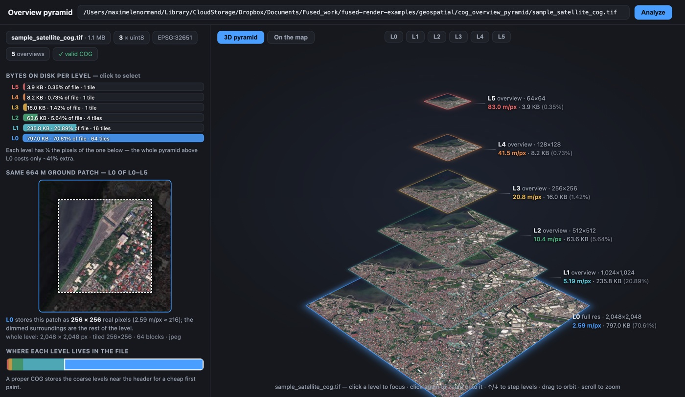
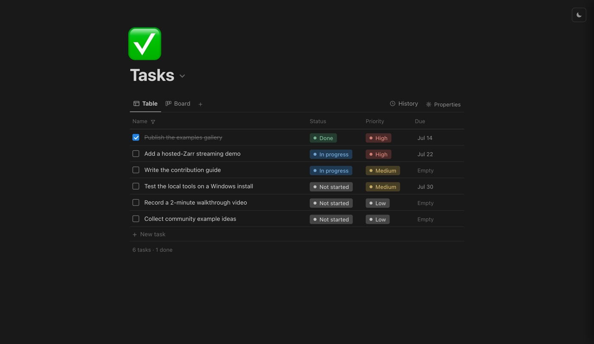
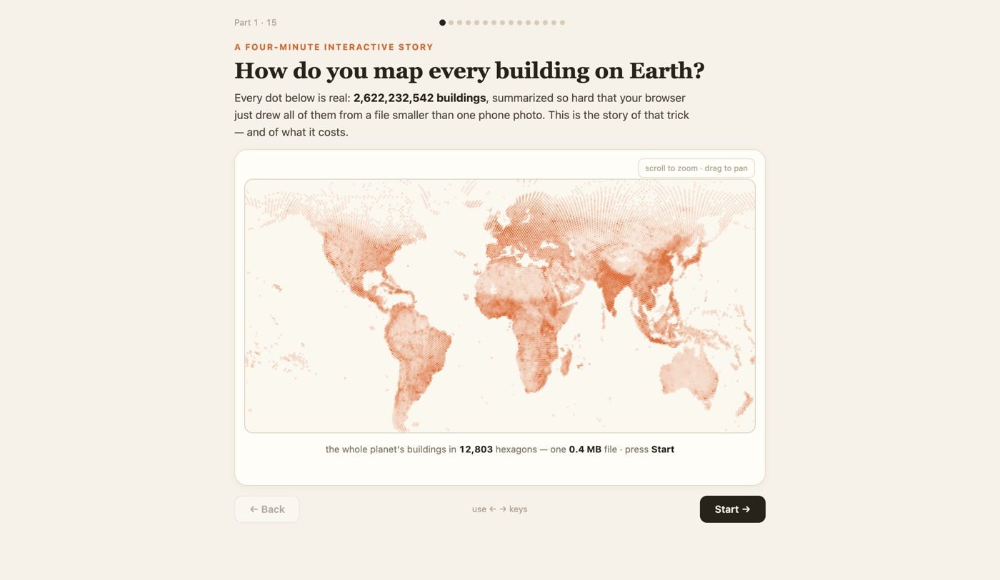
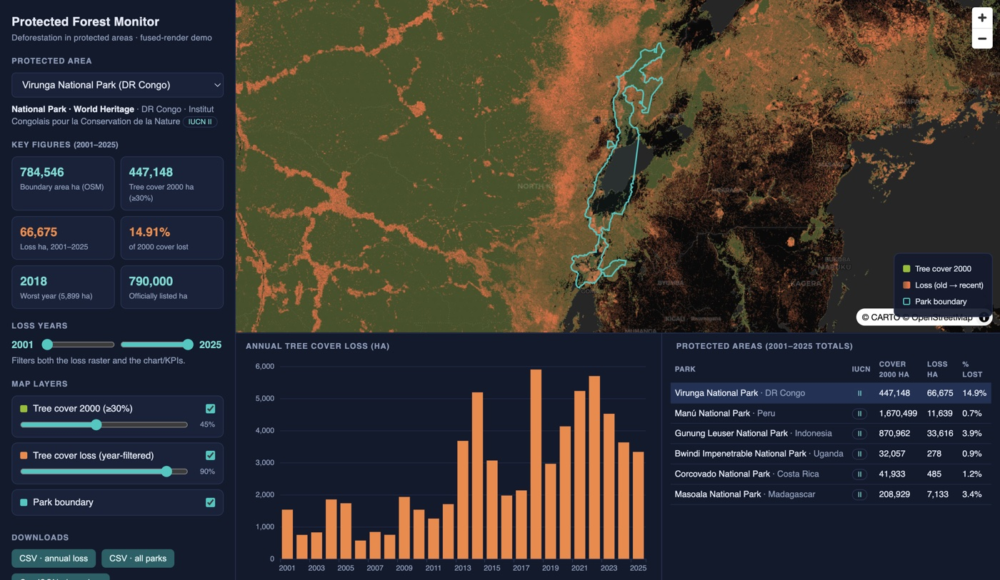
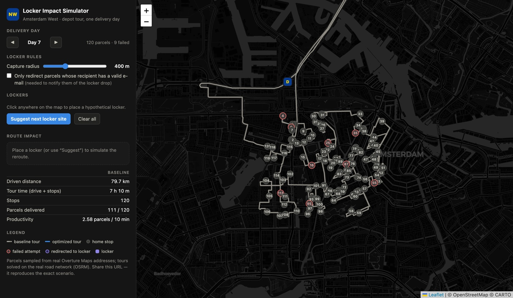
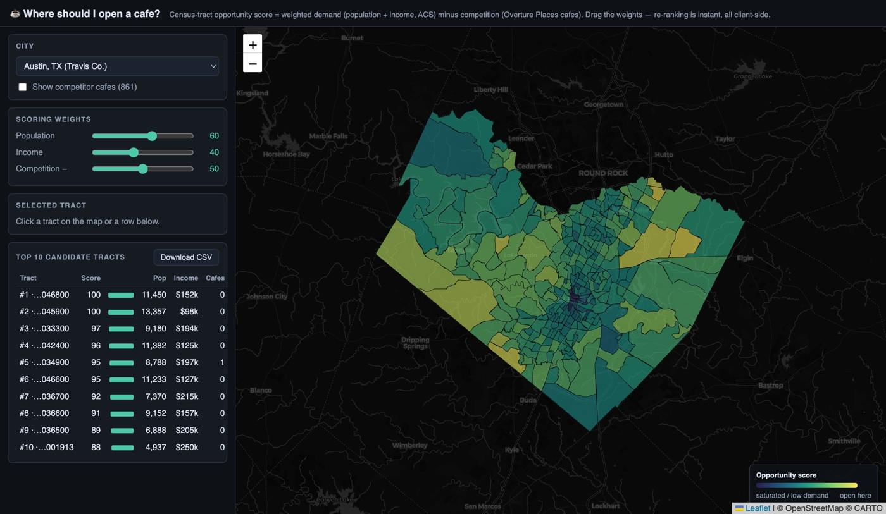
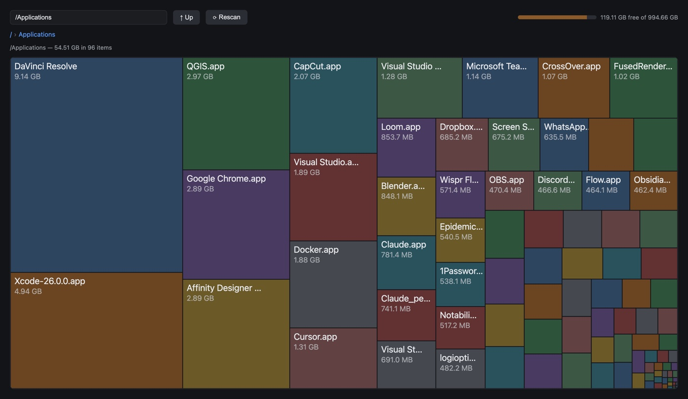
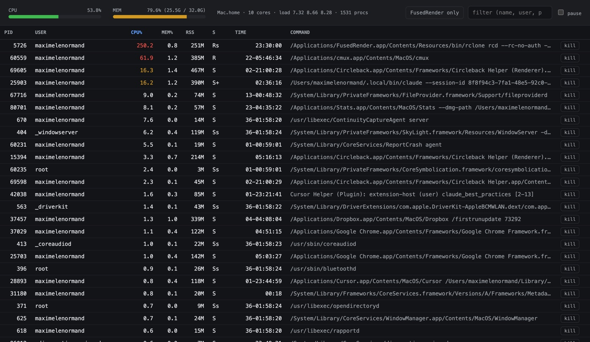

Your files,
rendered.
- Browse any folder in your browser
- Parquet, maps, 3D, PDFs — everything just opens
- No cloud, no account, no setup




Point it at a folder. Everything opens.
40+ formats render instantly. No notebooks, no plugins, no converters.
Local by design. Runs on 127.0.0.1. Your data never leaves your machine: no uploads, no accounts, no telemetry.
Zero setup. The app bundles Python and the fused CLI. Download, open, browse. Works offline.
Make it yours. A .py + .html pair is a live local app. Build dashboards over your own files in minutes.
Three steps, no terminal
- Download the app. It ships with everything it needs.
- Point it at a folder. Your files appear in the browser.
- Click anything. Data, maps, models and docs just render.
For developers: drop a .py next to an
.html and you have a live page that calls local Python.
Params sync to the URL, so every view is bookmarkable and shareable.
Get Fused Render
Signed and notarized, macOS 11+. Bundles Python, the fused CLI and rclone.
brew install --cask fusedio/tap/fused-render
Installer (.exe), Windows 10+. Bundles Python and the fused CLI.
AppImage (x86_64): make it executable and run. Bundles Python and the fused CLI.
Built with Fused Render
All examples on GitHub →




